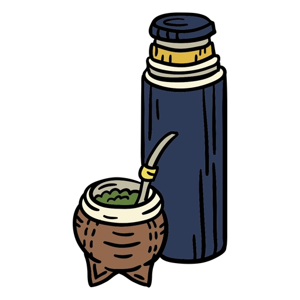

Curiosidades sobre a viagem
Gordo, quem é?
Gordo é uma pessoa que vive no interior do Estado do Rio Grande do Sul, mais precisamente na cidade de Garruchos, levando uma vida simples no campo, Gordo gosta de comer carne e beber cerveja durante o dia. Chegando no final da tarde (18h00) ele se recolhe e vai dormir
Autor da trova Percanta pequeninha Gordo contém um álbum repleto de sucesso.
Ele possui uma caminhonete que foi dirigida por Fernanda Garaluz e por Rodolfo.
São Borja
São Borja conhecida como a terra dos presidentes na fronteira com Argentina, é uma cidade do Rio Grande do Sul. Lá morou Mano Lima, um dos principais compositores da música gaúcha e teve como vereador Renê.
